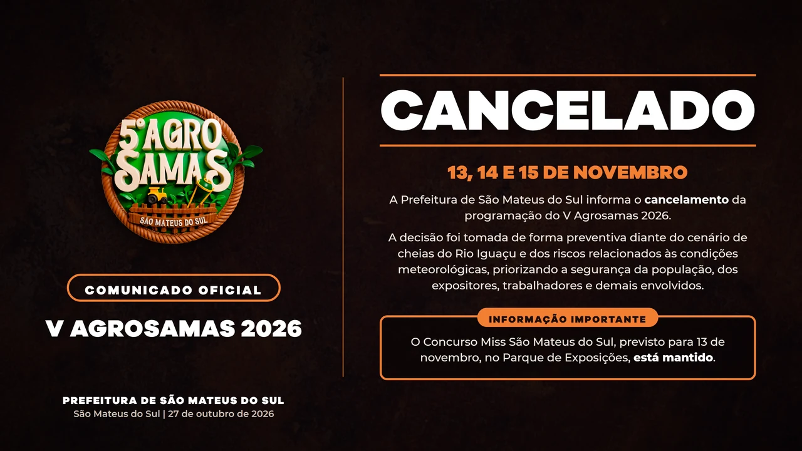
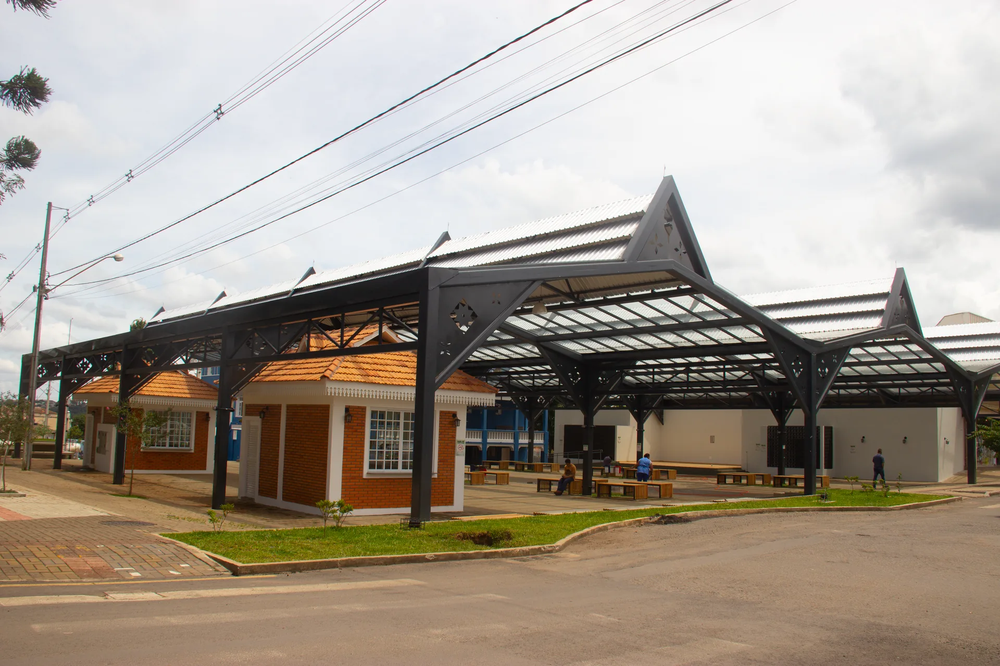

Campo
Produção regional e o trabalho que nasce do território.

A Prefeitura Municipal de São Mateus do Sul informa o cancelamento da programação do V AgroSamas 2026, que estava prevista para os dias 13, 14 e 15 de novembro.
A decisão foi tomada de forma preventiva diante do cenário de cheias do Rio Iguaçu e dos riscos relacionados às condições meteorológicas, priorizando a segurança da população, dos expositores, trabalhadores e demais envolvidos.
Comunicado oficial — .
A cidade encontra o campo
O AgroSamas reúne agro, gastronomia, música, empreendedores e produção regional em São Mateus do Sul.
Esta página registra o comunicado oficial de cancelamento da edição 2026 e mantém acessíveis as experiências de São Mateus do Sul.
Conheça a experiênciaEdição 2026 · cancelada
O universo AgroSamas
Produção regional e o trabalho que nasce do território.
Gastronomia e produtos que aproximam quem produz de quem visita.
Empreendedores, tecnologia e conexões para movimentar a região.
Um evento também feito de encontro, convivência e palco.
Tempo compartilhado por moradores e visitantes.
A cidade é parte da experiência — não apenas o endereço do evento.
Evento + destino + visita
Descubra hospedagem, sabores, rotas e paisagens de São Mateus do Sul nos guias do Portal de Turismo.

São Mateus do Sul · ParanáLocal habitual do evento
A programação do V AgroSamas 2026 foi cancelada. O Concurso Miss São Mateus do Sul, mantido para 13 de novembro, acontece em outro local: o Parque de Exposições.
Conhecer a Rua do MatheInformações úteis
Continue a viagem
Entre a cultura, a erva-mate e o Rio Iguaçu, há muito mais para viver no destino.
Explorar São Mateus do Sul